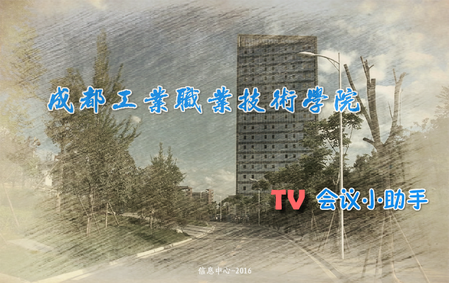

成都工业职业技术学院，是由成都市人民政府举办、四川省教育厅主管的一所以工科为主的公办全日制高等职业技术学院。
学院肇始于1951年7月，历史悠久，积淀深厚，办学经验丰富。
2014年4月，在原成都市工业职业技术学校基础上新建成都工业职业技术学院。
……会议小助手后台管理系统
移动设备TV端APP

适合当前智能电视，主要以Android系统为主，电视端监控会议！！
完成APP移动端
以混合模式开发技术，Android、IOS
各平台通杀！
后台管理系统
以Bootstrap响应式开发为基础，结合ASP.NET后端服务程序，完成了适合移动终端访问的后台管理系统。
项目启动
开发团队：廖野平、林柏涛、孙宇、张明、张昊、黄磊、陈智秋等。